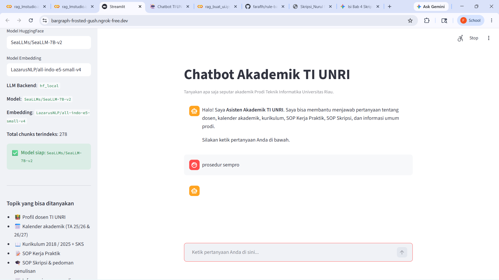
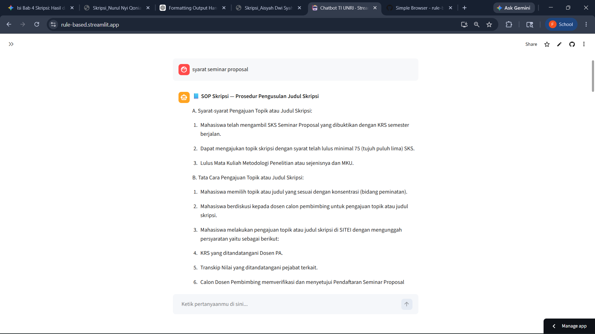
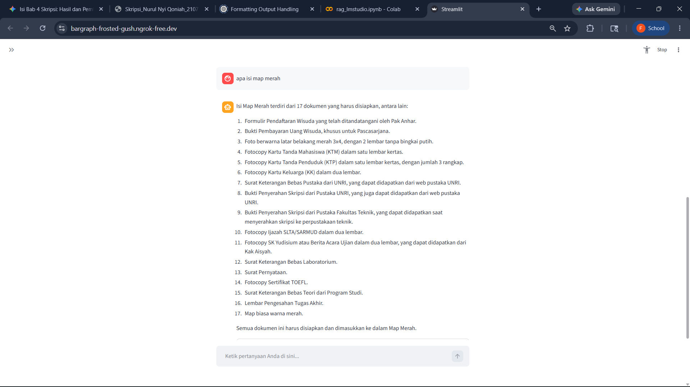
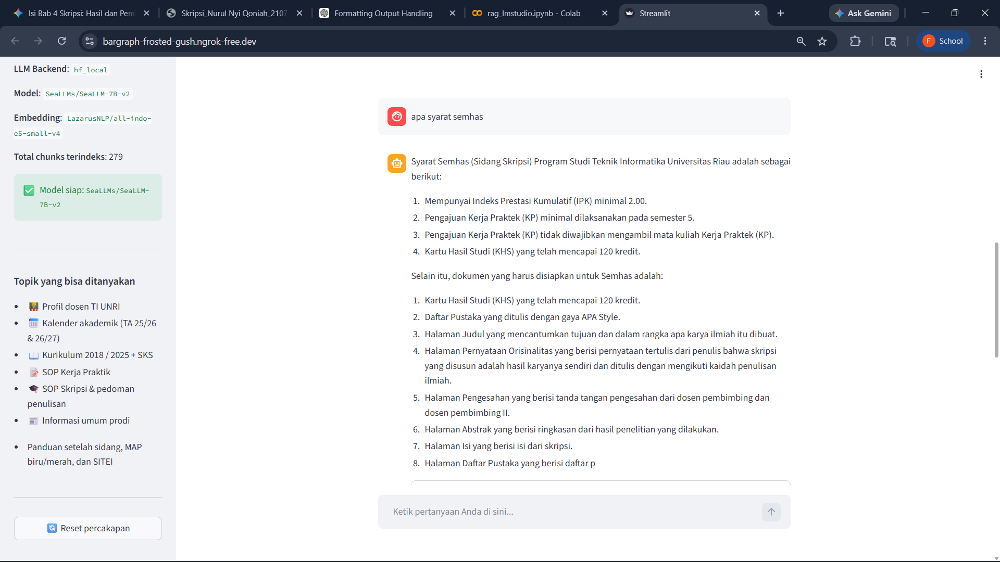

Streamlit Interface
Built a chat-based web interface with sidebar configuration for backend selection, model settings, LM Studio endpoint, embedding model, and conversation reset.
AI Chatbot Project
A Streamlit-based Retrieval-Augmented Generation application that answers academic questions about the Informatics Engineering Study Program at Universitas Riau. The chatbot retrieves context from local academic documents, generates concise Indonesian answers, and displays source references for transparency.

The project was built to help students and academic users ask questions about TI UNRI academic procedures, curriculum, lecturers, calendars, internships, thesis stages, payment schedules, graduation schedules, and post-defense administration using a grounded local knowledge base.
Built a chat-based web interface with sidebar configuration for backend selection, model settings, LM Studio endpoint, embedding model, and conversation reset.
Combined BM25 keyword retrieval with Chroma vector search so the chatbot can retrieve relevant context from local Markdown and text documents.
Used Indonesian E5 embedding support to index academic documents and improve retrieval quality for Indonesian-language questions.
Added routing for lecturers, academic calendars, curriculum, internship SOP, thesis SOP, seminar proposal, thesis defense, blue/red folders, SITEI, UKT/SPP, and graduation topics.
Supported both a local Hugging Face backend and an OpenAI-compatible LM Studio endpoint, making the project adaptable to different development environments.
Displayed retrieved source documents alongside generated answers so users can verify where the academic information came from.
The system turns local academic documents into searchable context, routes questions to the right academic topic, retrieves relevant evidence, and generates answers grounded in that evidence.
The app loads local Markdown and text files from the project root or an optional content folder.
Documents are split into chunks and indexed into Chroma with the Indonesian E5 embedding model.
The route classifier detects whether the question belongs to a specific academic topic or a general retrieval path.
BM25 and vector search retrieve context, then the active LLM generates an Indonesian answer with source references.
The screenshots show the main chat interface and representative academic questions answered using retrieved local context.


